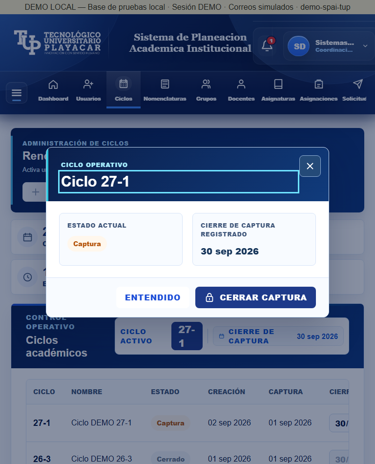
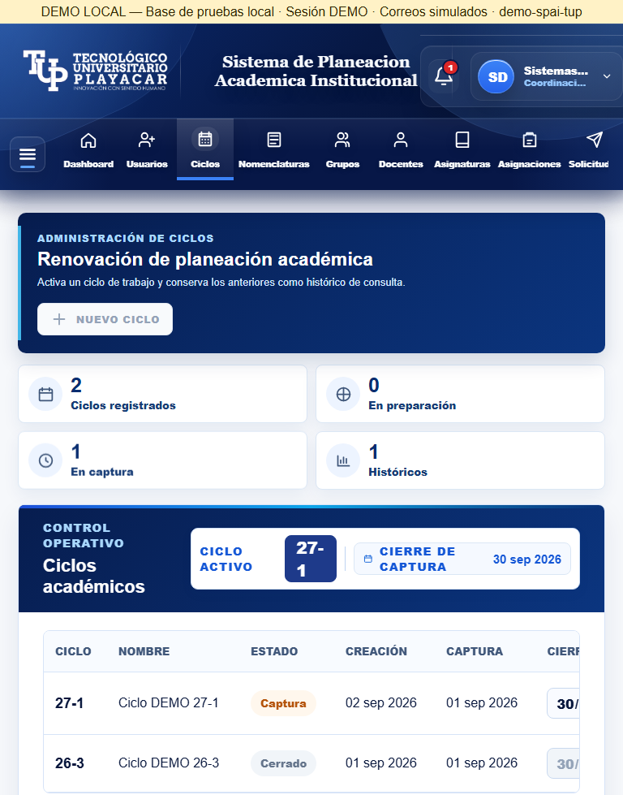
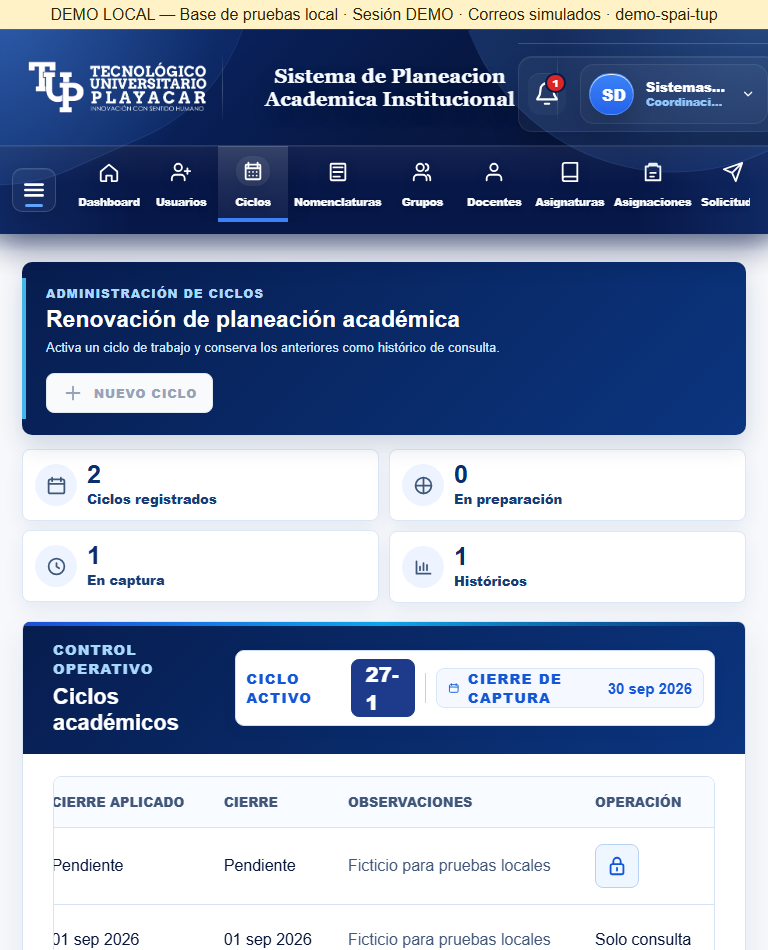
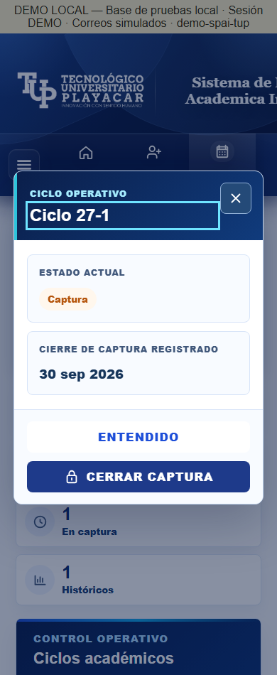
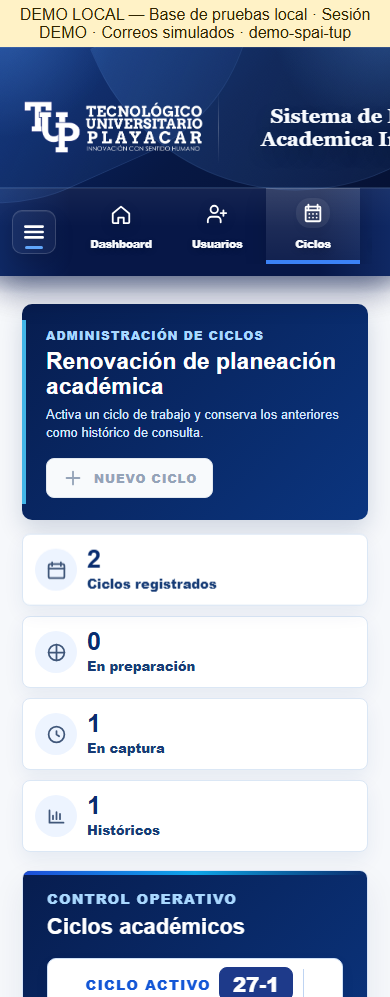
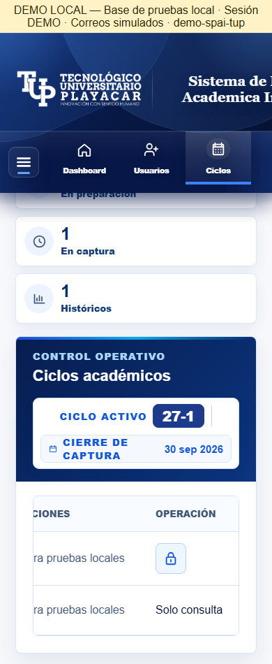
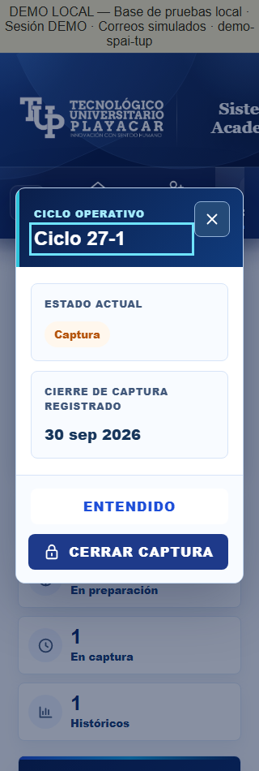
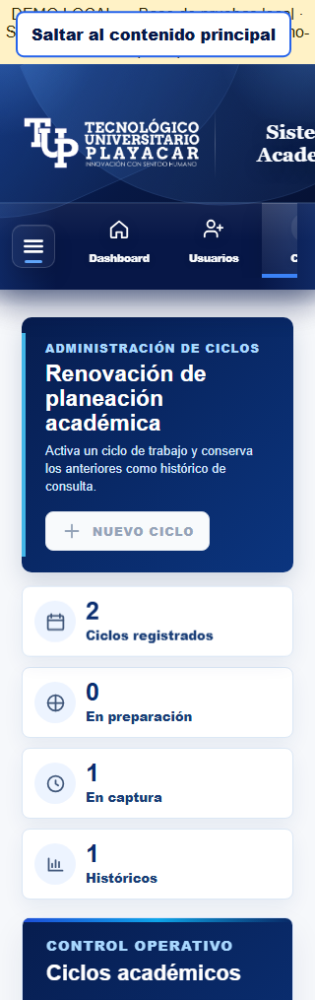
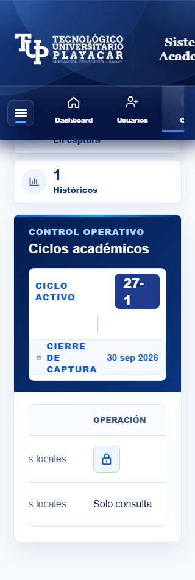
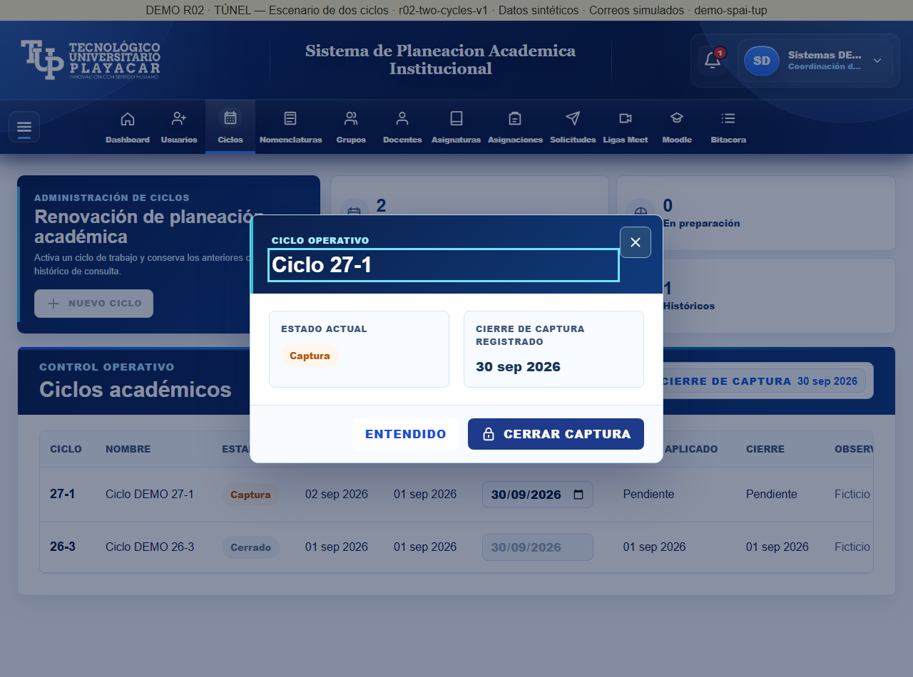

22/10/2026. 27-1 Captura; 26-3 Cerrado. Capturas técnicas del entorno aislado, aceptación humana pendiente.
Abrir revisión local · Resultados · Teclado y cancelación
La tabla conserva desplazamiento horizontal. Las imágenes de operaciones muestran su extremo derecho. La copia histórica permanece intacta; el puerto 4206 ahora sirve el escenario R02.









Abrir demo actualizada · Comprobación HTTPS real desde el anfitrión
